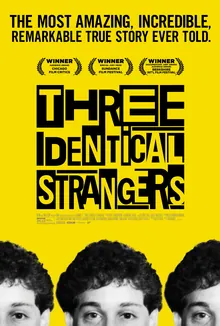

The genetics
The film is about a real nature-versus-nurture study on human subjects. Psychiatrists Peter Neubauer and Viola Bernard, working with the Jewish Board of Guardians, followed genetically identical siblings whom the agency had deliberately placed in families with different parenting styles and economic levels, visiting and evaluating them throughout childhood without telling the adoptive parents the study's real purpose. The brothers' shared tastes and habits, and the different paths their lives later take, invite the viewer to weigh heredity against upbringing, but the film cannot settle the question: the results were never published, the records are sealed until 2066, and the files eventually released to the surviving brothers are heavily redacted and contain no conclusions. The researchers are portrayed critically, as scientists who used children as subjects without their families' knowledge. The brothers also ask whether they were chosen because of a family history of mental illness, which a former researcher interviewed in the film denies. No geneticist appears; the scientists involved are psychiatrists.
The story
In 1980, 19-year-old Robert Shafran arrives at a community college in upstate New York and is repeatedly greeted as "Eddy Galland". The two young men meet and discover that they are identical twins adopted as babies by different families; the publicity that follows reveals a third brother, David Kellman. The triplets become a media sensation, appear on television, move in together and open a restaurant, but over time their relationships grow strained, and all three struggle with mental health problems; Galland, diagnosed with manic depression, dies by suicide in 1995. Tim Wardle's documentary then follows the discovery that the adoption agency, Louise Wise Services, separated the boys on purpose and placed them with a blue-collar, a middle-class and an affluent family as part of a study that was never published and whose records remain sealed.